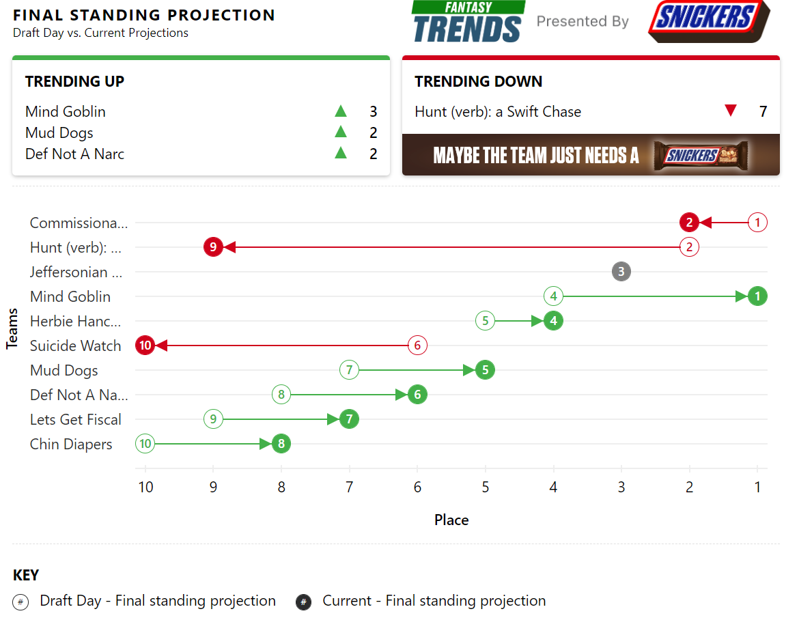

Silver Fox Regulars
Week 7 Commissioner Report

| Big Dick of the Week | Dog of the Week | Beat Off of the Week | |
|---|---|---|---|
| Team | Mind Goblin | Chin Diapers | Let's Get Fiscal |
| Points | 187 | 59 (Back to back) | Finshed 8th Lowest and Won |

Week 7 Recap - Halfway Done
Another week of seemingly random NFL scores. Does anyone actually know what teams are good this year besides the Eagles and Bills? Only Joe Burrow himself in some snatch is proving to be a little more consistent. I mean imagine yourself a Lamar Jackson owner, waking up Sunday morning stiff as a flagpole knowing he is about to go off on the Browns. And he puts up a measly 9 points. I mean Daniel fucking Jones put up 28 for christ sake. Dude had over 100 rushing yards. But I guess that isn't too surprising since Daniel Jones is the fastest quarterback in the NFL .
-
Zac with another Big Dick of the Week win. Is that his second of the year already? Fuckin dp'ing over here. Speaking of DP, what a move to pickup pornstar Jimmy for a week without Josh Allen. It's moves like that which will lead to a happy ending for him this season.
-
Justin pulled out another win with only 106 points. That was the 8th lowest total of the week. I guess that's what happens when you plan Chin Diapers, the back to back Dog of the Week. Mid-game injuries to DK and Amon-Ra not helpful here; and not much help down on the bench with lonely Mooney scoring 8.3 pts. A hail mary trade needed to salvage this roster.
-
The waiver wire whore himself Ryan only managed to put up 100 against Zac. You would think 17 acquisitions would yeild a slighlty better result. Someone at ESPN sees that and says, yea this guy's trending up. Sitting at 5-2 but only has the 7th most "points for", tied with Kevin. We'll see if he can he keep this up to make the playoffs.